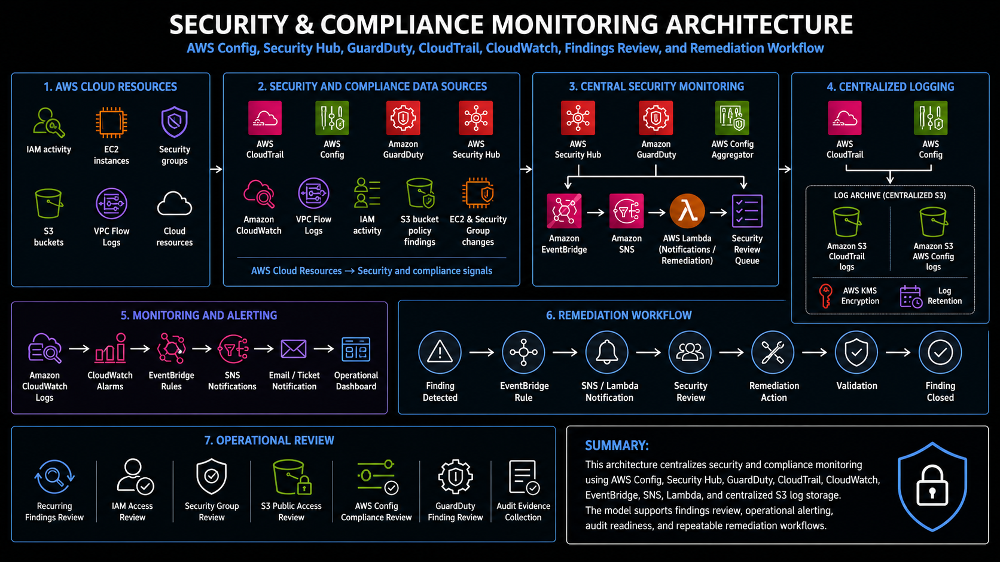

Project Documentation
Security & Compliance Monitoring
This project documents a centralized security and compliance monitoring model for AWS environments. The work focused on improving visibility across accounts, consolidating security findings, reviewing AWS Config compliance data, monitoring GuardDuty and Security Hub findings, using CloudTrail and CloudWatch for operational investigation, and supporting a repeatable remediation review process.

Overview
This project documents a centralized security and compliance monitoring model for AWS environments. The work focused on improving visibility across accounts, consolidating security findings, reviewing AWS Config compliance data, monitoring GuardDuty and Security Hub findings, using CloudTrail and CloudWatch for operational investigation, and supporting a repeatable remediation review process.
The project was not limited to enabling a single security service. It involved the operational work required to make security findings usable: aggregating data, grouping findings by account or ownership area, reviewing high-priority items, validating whether findings were still active, routing remediation to the right owners, and collecting evidence for recurring governance or audit conversations.
Background
In a multi-account AWS environment, security visibility can become fragmented if each account is reviewed separately. CloudTrail, AWS Config, GuardDuty, Security Hub, CloudWatch, IAM activity, and resource configuration changes all provide useful signals, but the value of those signals depends on whether they can be reviewed centrally and converted into actionable remediation work.
Security and compliance monitoring needed to support both daily operational triage and recurring governance review. Some findings required immediate investigation, such as unexpected IAM activity, public access exposure, risky security group changes, or GuardDuty threat findings. Other findings required structured follow-up, such as AWS Config noncompliance, Security Hub control failures, missing logging configuration, or evidence needed for periodic account reviews.
The goal was to create a monitoring model that improved security visibility without relying on manual console checks in every account. Centralized findings, consistent reporting, event-driven notifications, and clear remediation ownership made the environment easier to review and easier to support.
Business Problem
The business problem was fragmented security evidence and unclear remediation ownership. When findings are spread across multiple AWS accounts, it becomes difficult to know which findings are most important, which team owns the affected resource, which findings are duplicates or stale, and which issues have already been remediated.
Without a repeatable review process, security findings can become noise. Teams may see a large number of failed controls, but still lack the context needed to prioritize them. A finding only becomes useful when it can be grouped, reviewed, assigned, remediated, and validated. This project focused on creating that operating model around AWS-native security and compliance services.
The business need was to strengthen compliance posture, improve audit readiness, reduce manual evidence gathering, and give platform and application owners a clearer way to understand and respond to cloud security findings.
Architecture
The architecture used AWS-native security services as the primary monitoring foundation. AWS Config tracked resource configuration and compliance state. Security Hub provided a central view of security standards and findings. GuardDuty provided threat-detection findings. CloudTrail captured account and API activity. CloudWatch supported logs, alarms, operational signals, and troubleshooting. IAM and AWS Organizations provided the account and access context needed to understand where findings originated and who could remediate them.
In a multi-account pattern, findings and compliance signals were centralized through a security account or aggregated security view. AWS Config aggregation and Security Hub aggregation made it easier to review findings across accounts instead of checking each account manually. EventBridge, SNS, and Lambda-style workflows supported notification, reporting, enrichment, or remediation handling when findings required additional processing.
Centralized logging supported investigation and evidence collection. CloudTrail and AWS Config records could be stored in centralized log storage, while CloudWatch provided operational logs and alarms. This separation helped preserve audit visibility and made it easier to support security review without depending only on application teams or account-local evidence.
What I Did
I supported security and compliance monitoring by reviewing Security Hub findings, AWS Config compliance data, GuardDuty signals, CloudTrail activity, CloudWatch logs, and account-level ownership context. The work included helping group findings, identify high-priority items, validate whether findings were still active, and route issues toward the correct remediation path.
I also supported reporting and evidence-gathering workflows. Security data needed to be useful for operational teams and for stakeholder review, so findings had to be organized in a way that made sense by account, ownership area, severity, resource type, or control category. This helped reduce manual evidence gathering and made security review more consistent.
The work also involved understanding how AWS-native services fit together. Security Hub findings can be generated by security standards, partner integrations, custom checks, or other AWS services. AWS Config tracks configuration state and compliance. GuardDuty identifies suspicious or potentially malicious activity. CloudTrail provides the audit trail for who did what. CloudWatch supports monitoring and alerting. The project connected these services into a practical operating model for security review.
Implementation Details
1. Security Hub findings visibility
Security Hub was used as a central place to review security findings and compliance control status. Findings could be reviewed by severity, workflow status, resource type, account, and control category. This provided a better operating view than checking individual services separately because Security Hub brought many findings into a common format.
2. AWS Config compliance monitoring
AWS Config provided configuration history and compliance status for AWS resources. Config rules helped identify resources that did not meet expected configuration standards, such as unmanaged instances, patch compliance gaps, security configuration issues, or missing required controls. Config aggregation supported broader review across multiple accounts.
3. GuardDuty threat-detection review
GuardDuty findings were reviewed as part of the security monitoring workflow. These findings required a different operational mindset than routine compliance checks because they could represent suspicious activity, unexpected behavior, or indicators that required prompt investigation. GuardDuty findings were treated as security signals that needed triage, ownership, and validation.
4. CloudTrail audit evidence
CloudTrail supported investigation and evidence collection by showing account and API activity. When a security group changed, an IAM policy was modified, a resource became public, or an unusual action was detected, CloudTrail provided the audit path needed to understand the activity. This made security review more evidence-based instead of relying only on the current state of a resource.
5. CloudWatch logs and alarms
CloudWatch supported operational monitoring by collecting logs, surfacing alarms, and helping teams investigate activity after a finding or incident. CloudWatch data helped connect security findings to application or infrastructure behavior, especially when reviewing logs, failed operations, service activity, or alarm history.
6. Multi-account aggregation and ownership mapping
Multi-account findings review required context. A finding from one account may have a different owner, priority, or remediation path than the same type of finding in another account. Mapping findings to account ownership, business area, workload category, or operational team made it easier to route remediation and avoid findings sitting unresolved because ownership was unclear.
7. Event-driven notification and remediation support
EventBridge, SNS, and Lambda-style workflows supported notification and remediation tracking. Not every finding should trigger immediate automation, but event-driven processing helped move important findings into the right review path. Notifications could alert the platform team, produce reporting output, or create a handoff for manual remediation where human review was required.
8. Reporting and evidence collection
Security reporting helped turn raw findings into reviewable evidence. Findings could be exported or organized for stakeholder review, remediation tracking, and recurring governance conversations. This reduced manual evidence gathering and made security posture easier to discuss with both technical and non-technical stakeholders.
Validation
Validation focused on confirming that security and compliance services were enabled, reporting, and producing useful findings. Security Hub needed to show active findings and control status. AWS Config needed to record resource configuration and rule compliance. GuardDuty needed to produce or centralize threat findings. CloudTrail needed to capture account activity, and CloudWatch needed to provide the logs and alarms required for operational review.
Findings validation required more than confirming that a finding existed. Each finding needed to be reviewed for severity, resource context, ownership, current state, and remediation path. Some findings could be stale or already resolved, while others required owner follow-up or additional investigation. Validation helped separate real remediation work from noise.
Evidence validation also mattered. For audit readiness or recurring review, the team needed confidence that reported findings, compliance status, logs, and remediation notes reflected the actual environment. This required checking service data, reviewing timestamps, confirming account context, and documenting final status clearly.
Operational Workflow
The operational workflow began with centralized findings review. Security Hub, AWS Config, GuardDuty, CloudTrail, and CloudWatch were reviewed to identify active findings, compliance failures, suspicious activity, and monitoring events. Findings were grouped by severity, control type, resource type, account, and ownership path so the team could prioritize what needed action.
After grouping, findings were triaged. High-risk findings were reviewed first, including security group exposure, public access concerns, IAM-related issues, GuardDuty findings, missing logging, or compliance failures that affected important workloads. Each finding was evaluated for current state, business context, false-positive likelihood, and remediation owner.
Remediation then followed an ownership workflow. Some issues could be remediated by the platform team through guardrail updates, configuration changes, or automation. Other findings required application owner action, such as adjusting resource configuration, confirming business need, or updating workload-specific settings. After remediation, findings were validated again and then marked for closure or follow-up according to the review process.
The recurring review process created a feedback loop. Repeated findings could indicate a need for better guardrails, improved templates, stronger tagging, clearer ownership, or additional automation. This turned security monitoring into an operational improvement process rather than a static dashboard.
Outcome
The project improved security visibility by centralizing findings and giving the platform team a clearer view of compliance status across AWS accounts. Instead of relying only on manual checks or isolated service consoles, the review process brought Security Hub, AWS Config, GuardDuty, CloudTrail, CloudWatch, and IAM context into a more consistent operating model.
The work also strengthened remediation ownership. Findings could be grouped, prioritized, and routed to the correct team more clearly. This reduced the chance of findings remaining unresolved because ownership was unclear and made recurring security review easier to manage.
The biggest operational value was improved audit readiness and reduced manual evidence gathering. By organizing findings, compliance data, logs, and review output, the security monitoring process made it easier to show what was being monitored, what required remediation, what had been validated, and what remained open for follow-up.
What This Demonstrates
This project demonstrates practical AWS security operations experience across Security Hub, AWS Config, GuardDuty, CloudTrail, CloudWatch, IAM, AWS Organizations, multi-account findings review, alerting, remediation tracking, and evidence collection. It shows the ability to work with security services as part of a real operating model, not just enable them in isolation.
It also demonstrates platform engineering judgment. Security monitoring is not only about collecting findings. It requires understanding account ownership, resource context, severity, evidence, audit needs, operational triage, and remediation workflows. This project shows how security and compliance data can be turned into a repeatable review process that improves visibility, strengthens compliance posture, and supports ongoing cloud governance.